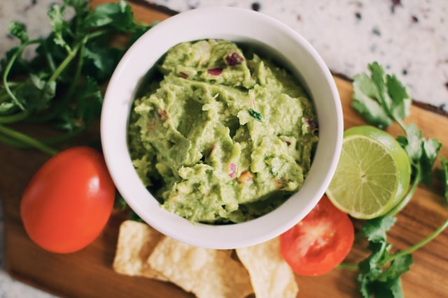

Guacamole

Description
This guacamole is great! Whether or not you want it spicy, this guacamole is a dip to die for!
Ingredients
- 2 avocados, peeled and pitted
- 1 cup chopped tomatoes
- ¼ cup chopped onion
- ¼ cup chopped cilantro
- 2 tablespoons lemon juice
- 1 jalapeno pepper, seeded and minced (Optional)
- salt and ground black pepper to taste
Steps
- Mash avocados in a bowl until creamy.
- Mix tomatoes, onion, cilantro, lemon juice, and jalapeno pepper into mashed avocado until well combined; season with salt and black pepper.